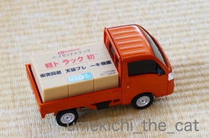
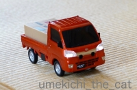
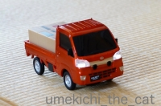
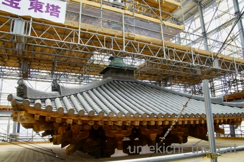

スマアシvs梅吉 [梅吉]

梅吉さんの横を走り抜けていく軽トラのミニカー。

おっとがとあるルートから入手してきました＾＾
衝突回避支援ブレーキ機能搭載軽トラ（長っ）
HIJET TRUCK By DAIHATSU
のミニカーです。
衝突回避の支援システムを「スマアシ」
（スマートアシスト）と呼ぶようで
箱には「スマアシミニカー」って書いてました。
 
面構えはこんな感じ。スイッチをオンにするとちゃんとライトもつきます。

スマアシミニカー、梅吉さんに向かってGo！


足早に避ける梅吉さんwww

障害物が有るとちゃんと止まるのですが梅吉が避けちゃうのでどこまでも走っていきます。
この時はこのまま直進してテレビ台の下に入り込んでしまいました(-_-メ)
スマアシミニカーを取ろうと棒を持って奮闘するおかーさんに
ちょっかいを出そうと興奮する、新しい遊びを発見した梅吉さんでした(*>艸<)
にゃんこは逃げていくものは追いかけますが
迫ってくるものは避けようとしますよねー。
そして棒を持って隙間をゴソゴソする人が大好物0(≧▽≦)0
ちゃんとストップする賢いスマアシミニカー。証拠映像。
（7秒。音無です＾＾）
GWに薬師寺に行ってきました。
東塔の修理作業も終わりに近づき作業現場が一般公開されていたのです。
（一般公開は5月6日で終了しています。
なお、東塔の落慶法要は一年後2020年4月22日～26日の予定です）

作業用足場のスロープを登っていきます。
スロープの6階から７階部分が公開されている部分。
普通のビルのほどの高さはないと思いますがそれでも結構な高さ。
暑い日だったのでスロープ途中で休んでいる方が何人もいらっしゃいました。
薬師寺建立の発願は680年に始まります。
平城京の遷都にあわせて今ある場所に移ったのが716年頃から。
東塔が完成したのは730年と言われています。
薬師寺は火災等で創建当時の建物のほとんどが喪失しているのですが
東塔だけは当時のままの姿です。
修理の際に調査すると心柱の外形は残っていたものの
中心部はほぼ空洞だったんですって。
もう少し修理が遅かったら崩れていたかも。
今回、僧侶の方から薬師寺にまつわるお話をあれこれ聞いて来ました。
高校の修学旅行でも聞いたはずですが覚えちゃいませんwww
（というかアホな高校生は聞いていなかったです。ごめんなさい）
薬師寺のような大規模な有名寺院でも国から予算が付いたり企業からの寄付で
今あるような形に修復され始めたのはほんの50年前くらいからなんですって。
時代で言えば高度成長期。
名刹古刹の文化的価値が認められ始めたのってごく最近なんですね・・・
朝廷、有力武将や大名の庇護がなかった時代は本当に苦労された様です。
もちろん明治期の改革や戦中・戦後の時代も。
金堂の屋根が崩れていて薬師三尊像が野ざらしの時代もあったのだとか。
（それもほんの5〜60年前のお話です）
塔の上に突き出ている部分は相輪と呼ばれるのですがこの部分も今回大規模な修復が。
なかでも水煙と呼ばれる部分は劣化が激しくて今回新調されました。
真新しい水煙、足場で全容がはっきりしませんが
見えている部分、美しかったです！
足場の７階部分から見下ろした薬師寺近郊の風景。
ぼわーっとした画像なのはアクリル板越しだからです。
有名すぎる薬師三尊像は省きますね。
中門の東側にひっそりと立つ東院堂の仏様、
聖観世音菩薩に見惚れて来ました＾＾
お堂の中は撮影禁止なので外からパチリしましたよー。

カフェオレ色の梅吉

梅吉 2023年8月10日 永眠


梅吉と出会った譲渡会

犬猫の理由なき殺処分ゼロ
妄想広告
UMEKICHI 光

爆発的に早い！
時々攻撃的！
Thanks to Mr.Boss365
爆発的に早い！
時々攻撃的！
Thanks to Mr.Boss365

梅吉さんの尻尾と背中を弓なりにした振り返り姿がなかなか良いですね。細かいところまでよくできたミニカーなのにお気に召さない様子。確かに猫は追うのは好きで追いかけてくるのは嫌がりますね。
by zombiekong (2019-05-13 00:43)
スマアシは、奥さんの車についています。
そのミニカー欲しいです。
もう寝ます。
by riverwalk (2019-05-13 02:33)
面白い車ですね。
分解してみたい＾＾；
by ぽちの輔 (2019-05-13 05:56)
スゴイ！ピッタリ止まりますね^^
by ニコニコファイト (2019-05-13 06:40)
おお！まさにスマアシ！
昨今のミニカーはここまで進化してるんですね(@_@)！
薬師寺、子供の頃、遠足で行った記憶ぐらいしかない、
元奈良県民の私です(^_^;)
by よーちゃん (2019-05-13 06:43)
梅吉さんの表情がw
完璧なスマアシですが、ニャンコとしては
追ってくるものからは逃げますよねぇ(⌒-⌒; )
先代猫はこういう物体（？w）が近寄ると
飛び上がってかみさんの後ろに隠れてから
手だけ出して猫パンチを食らわせてましたw
by ニッキー (2019-05-13 07:24)
スマアシミニカーに、いやそうに逃げてく梅吉さんが、かわいそうやらかわいいやら。くすっと笑っちゃいました。
しかし、ピッタリ止まりますねーー(@_@)
薬師寺、行ったことある、、、よなぁ。うぅ、忘却のかなただ。
by ChatBleu (2019-05-13 07:24)
今のミニカーって精巧で性能がいいのですねぇ～♪
ＴＶの下に入ったスマアシを棒で取り出すところへ
梅吉さんの協力が入る（笑
その光景が目に浮かぶようで笑っちゃいました(#^.^#)
初めは逃げていた梅吉さんも
動画では当たらないってもう分かっているんですね！
賢い梅吉さんです！
by きぃ (2019-05-13 08:15)
このミニカーピタッと止まって凄いですね。
梅吉さんの学習能力？も凄い！
by kou (2019-05-13 09:48)
ミニカーでもちゃんと緊急ブレーキが利くのですね！
梅吉さんもじっくり見ていますね(^^)
by ma2ma2 (2019-05-13 10:13)
こんにちは。
梅吉君「スマアシ」にテンションは低めかな？
困り顔も味わいあり、撫で撫でしたくなります。
おっとさん、闇のルート持っているみたいですね。
ブログで公開して大丈夫でしょうか（笑）公開を後悔していませんか？
綺麗なお部屋！！見習わないといけませんね。
東塔の作業現場面白そうです。「東塔だけは当時のまま」は初耳でした。
修復時でなければ近づけない場所は貴重です。
関西方面は、神社仏閣が多いので色々楽しめますね！？(=^･ｪ･^=)
by Boss365 (2019-05-13 12:46)
ミニカーなのに、ちゃんと障害物の前でとまるなんてすごい！！
そうそう。追いかけてくるモノに関しては避けるよね〜(笑)
ルンバから逃げていたあおを思い出したわｗｗ
薬師寺、わたしが行ったときも東塔は修復工事をしていた記憶があるわ。
そっか。もうすぐ修復もおわるんだね。
観光でいったとき、修復期間にあたっちゃうと、「えー残念」っても思うんだけど、こういうふうに修復して、その期間でしか見られない場所、立ち入れない場所があると、それはそれでOKかなって思っちゃいます^^
by リュカ (2019-05-13 17:04)
はじめまして。
高橋と申します。
突然の投稿失礼します。
私は電子書籍のプロデュースとして活動し
現在は「動物」をテーマを出版活動に力を入れ
「梅しごとー梅吉日記ー」のブログに辿り着きました。
ちぃ様のブログを見させて頂きました。
梅吉ちゃんのかわいらしい仕草に
とても癒されました♪
私は猫を飼ったことがないのですが、とてもかわいくて
猫を飼ってみたくなりました！
ちぃ様にご相談ですが
今、ブログをアクティブに活動している方に
声を掛けているのですがもし、よろしかったら
今までアップされている「梅吉ちゃん」の写真を
電子書籍の写真集として出版させて頂きませんか？
こちら出版費用は一切頂きません。
無料で出版させて頂いていますけど
一切の妥協などせず表紙やタイトルに
力を入れておりそのお陰様でクライアント様から
「表紙のクオリティが高い！」
「本当にこれ無料で大丈夫ですか！？」
と言って嬉しい声を頂いております。
なかにはベストセラーで1位になったり
出版して次の日には売れ筋ランキングで
２位になって喜ばれる人もおりました。
ご興味をお持ちでしたら一度出版について詳しくお話したいと思います。
ご検討の程宜しくおねがいします
メールアドレス
etube.kindle@outlook.jp
完全無料で電子書籍プロデュースします
https://bit.ly/2UNBpzN
by 髙橋 鋭一 (2019-05-13 17:05)
ううぅ〜〜ん、これがあれば、写経は要りません。
ありがとうございますっ ^ ^
by 小松達也 (2019-05-13 19:44)
義妹も姪と、義妹のお母さんと
薬師寺の東塔見学に行っていたようです。
東塔の幕が外れるのが待ち遠しいです。
by あとりえＳＡＫＡＮＡ (2019-05-13 19:44)
すごい！スマアシカーちゃんと止まってる！
車を見つめる梅吉君がかわいいわ(*^-^*)ちょっとシッポぼわん気味？
by palpal (2019-05-13 20:36)
『スマアシミニカー』精巧にできてますね。
動画では梅吉さんは逃げないで、
スマアシカーはきちんと止まってます（笑）
梅吉さん慣れたのでしょうか。
姫路城の修理作業現場を見に言ったことがあります。
間近で見ると迫力がありますよね。
聖観世音菩薩様、外からパチリでも素敵に撮れてます。
良い休日でしたね。
by kiki (2019-05-13 20:44)
逃げるとどこまでのついて来る！(≧▽≦)
梅吉さん、ちょっと困り顔だけれどお尻尾ぶんぶんしてるし大丈夫ですね♪
ウチのはパニック起こして大変なことになりそう^^;
棒をもって覗き込みながらゴソゴソする下僕。
お猫様のテンションを上げるのにもってこい！な状況。
我が家でも家具の下へ押し込まれたオモチャを取ろうと這いつくばると、必ずこてつが私と隙間の間に陣取って一緒に覗き込みます(*^▽^*)
by ゆきち (2019-05-13 21:22)
おお！スマアシダイハツミニカーちゃんと止まってますね！
あの技術をミニカーに搭載するなんてすごいです。
ちゃんとライトも点くし！こりてぃ高いっすw
梅吉さんはん？というお顔でしたが・・・
そうそう猫は迫りくるものに逃げ腰ですよネ。
うちもチョロQなどだとどんどん後ずさります(笑
薬師寺、私が行ったときは見れませんでした。
歴史的な建造物を修復し維持していくのは大変な事なのですね。
by marimo (2019-05-13 21:32)
スマアシミニカー、とても精巧ですね！
ちょっと前、このくらいのサイズのミニカーのラジコン「デジQ」で猫と遊んでました。
猫も楽しけりゃコントローラで操るオッサン（私）も楽しいと言う優れものでしたが、もう売ってないのかな？
あと、ウチの猫は長毛なので、ミニカーの車輪の軸に毛が絡み付いて取り除くのが大変でした。^^;
薬師寺東塔の修理作業、どうやって修理しているのか興味があります。^^)
by yes_hama (2019-05-13 21:57)
スマミニ軽トラちゃんと ピィ と止まりますね！！すごい!(^^)!
by 50oyaji (2019-05-13 23:14)
すごい！スマアシミニカー、高性能ですね
薬師寺、長い間覆いがかかっていました
地元なのですっかり今の状況も見慣れてしまいましたが
やはり東塔・西塔が並ぶ姿を早く見たいです
by 藤並 香衣 (2019-05-13 23:33)
あらら、ミニカーにはお手ては出ないのですね！
ミニカーなのにスマアシとはこれまた！
梅さま、手前でピタっと止まる瞬間、ちょっとビクッ！としてません？^^;
いいなー、わたしも遊んでみたいです。
我が家は止まらないプルバックミニカーならあります。
ちゃーにぶつかってとまります（笑）
お寺の作業現場の一般公開って珍しいですね。
by Ja-Kou66 (2019-05-13 23:34)
梅吉さんの困ったような目つきに続き、ほぼ真横になった耳がツボ＾＾
しなやかに逃げますね～。
スマアシ、なんとちゃんとストップするんですね！ すごい～～～＾＾
薬師寺、歴史がありますねえ‥680年て。
なんて美しい像。
保存が考えられるようになったのは結構最近！？ 言われてみればそんなもんでしょうか。残っているものにはいろいろなご縁や幸運も働いたのでしょうね＾＾
by sana (2019-05-13 23:43)
折角の梅吉さんのオモチャなのに？遊ばないのか（ﾟ□ﾟ）
by 英ちゃん (2019-05-14 00:13)
数十年前の修学旅行でも生徒に一番人気だったのが
薬師寺のお坊さんのお話でしたが内容は全く覚えて
おりません。工事の様子は、滅多に見られないので
貴重ですね！面白そうだわ～。梅吉さんを追いかけ
続けるスマアシ（笑）梅吉さんの逆襲はあるかな？
by うりくま (2019-05-14 22:04)
いつもコメントありがとうございます。
by はっこう (2019-05-14 22:09)
zombiekongさん＞
ネズミの自走おもちゃも喜ばなかったので
予想した結果ではありましたw
が、おしっぽぶんぶんしながら背中弓なりの
なかなか良い逃げの姿を見せてくれましたよ＾＾
私はよつんばになって追いかけても（爆）
これと同じ様にすごく嫌な顔して逃げるんですよwww
riverwalkさん＞
ミニカー、非売品かな・・・
私も次運転するならスマアシ付きバックモニター付き
というか自動運転の車がいいなぁ。
運転下手なんですよ・・・(⌒-⌒;
ぽちの輔さん＞
荷台の積荷にミソがある様です。
分解するならそこかなー(*>艸<)
ちなみに電池もドライバーを使って蓋を開けなきゃ
入れられない様になってました。
ニコニコファイトさん＞
衝突して止まるんじゃなくて
直前で止まるのがすごいですよね＾＾
よーちゃん＞
ぶつかると止まるはあったと思いますが衝突回避！！
こういうので遊んだちびっこが車は直前で止まるもんだ
と思ってしまわないことを願います(｡-_-｡)
薬師寺は遠足の場所なんですね。
北海道の高校生の修学旅行は京都奈良がデフォルトですw
ニッキーさん＞
自分からはグイグイ来るくせに私がよつんばで追いかけたら
すごい嫌な顔して逃げていきますよ・・・(⌒-⌒;
先代猫さんもやっぱりゴッドマザー様を頼りにされていたのですね！
ゴッドマザー様の後ろに隠れてニッキーさんにパンチ
なんてことはなかったですよね？ね(*>艸<)
ChatBleuさん＞
スマアシミニカーは嫌そうなんですが構ってもらっていることは嬉しい
と複雑なにゃん心の梅吉ですwww
ピタッと止まるときもあれば
障害物と判断しないのか止まらない時も・・・
ダイハツの関係者が見ているかもしれないのでその点は忖度しましたー(≧▽≦)
ブログにはアップしなかったけどYouTubeには
スマアシ失敗編もアップしてます(*>艸<)
薬師寺、高校の修学旅行時の記憶はお坊さんの話に
「薬師寺に桑名正博がいた」という部分だけです(⌒-⌒;
きぃさん＞
棒を持っていなくても椅子の下などを覗き込むと
私の前に出て（ジャマw）一緒に覗き込む梅吉なのですが
棒を持ってゴソゴソするとさらにテンションが上がって楽しそうでした。
おかげでなかなかミニカーが取れずに大変でした(⌒-⌒;
ミニカーに逃げない梅吉は「またかいな もうつきあわへんで」
みたいな感じで動かなかったんですよー。
kouさん＞
学習したのか逃げるのも面倒になったのわからないのですが・・・(⌒-⌒;
止まったミニカーには「どうしたんやー」と
問いかけている様に見えました＾＾
ma2ma2さん＞
最近のミニカーは高性能なんですねー＾＾
止まったミニカーに梅吉もちょっとびっくりかもwww
Boss365さん＞
困り顔、なかなかバリエーションが豊かでしょう？(*>艸<)
梅吉は上瞼がまっすぐなせいかもともと困り顔気味で
里親募集のコメントにも「困り顔です。困ってませんが」とありました(⌒-⌒;
闇ルート、ふふふふふ・・・
そうなんですよwうちのおっともスパイかしらwww
露出してOKの確認はしたので大丈夫でーす！
薬師寺、相輪部分や屋根瓦をこの目線で見られるのはおそらく次の修理の時？
流石にもうこの世にいないわ。
そう思って見に行きましたよ＾＾
リュカさん＞
ぶつかって止まるのはあったと思うんだけど
障害物の前で止まるはすごいよね！！
このミニカーへの反応見て
梅吉はルンバでは遊ばないなって確信したわw
薬師寺、リュカさんが行った時も修理中だったのね。
文化財は修復期間が長〜いよね。
いろいろ調査もしつつなので時間がかかるんだろうねー。
しっかり修復してこのあとまた1000年2000年と受け継いでいってほしいわ！
高橋 鋭一さん＞
梅吉の可愛らしいあれこれを伝えられるのはブログだからこそと思っているので
電子書籍化等は全く考えておりません。
ねこは人間の思い通りにならない動物なので
可愛いと思う気持ちだけでは飼いにくいかもしれませんね＾＾
小松達也さん＞
web写経、なんちゃってー(*>艸<)
心洗われたご様子。良かったですwww
by ちぃ (2019-05-15 20:24)
あとりえSAKANAさん＞
思えば私が関西に住み始めた頃には
東塔はすでに幕の中でした。
東塔と西塔、並び立っているのを見るのが待ち遠しいです！
修学旅行で見たはずなんですが薬師寺の記憶は
ほとんど無いものですから〜(⌒-⌒;
palpalさん＞
本当に止まるんかいな、と思いましたが止まった！びっくり！！
戸惑い気味に見つめる梅吉の表情、びっくり半分アホくささ半分？(*>艸<)
kikiさん＞
スマアシミニカーから逃げない梅吉は
学んだのか付き合いきれなくなったのか・・・(⌒-⌒;
姫路城級の大きさになると東塔の何倍もの迫力があったのでしょうね！
そういえば私が数年前に姫路城に行った時
本丸は出来上がっていましたが城壁を修理する足場がまだありました。
文化財の修復は根気と時間が必要なのですね。
薬師寺は修復のおかげで良いものを見ることができました！
ゆきちさん＞
そういえば梅吉がパニック起こしているのって・・・見たことないですw
困った顔とこれじゃない顔は得意なんですが(*>艸<)
困った顔も生まれつきの顔だけど実際に困った様子もないかもです。
つねに「まっ、いっか」と「やるんか〜」な姿勢の梅吉です。
うちも一緒にゴソゴソしている隙間を覗き込みます！
そのせいで全然奥が見えないのですがどさくさに紛れて
おちりの匂いをチェックする変態下僕です0(≧▽≦)0
mariomoさん＞
このミニカー、販促用グッズなのかなぁ・・・
あまり細かく書くと入手経路がアレなのですがw
とってもしっかり出来ていておもちゃの範疇を超えている感じです。
電池入れるのもドラーバーでネジ一つ外す手間があったし
もし売り物だったら結構な値段がしそうです＾＾
薬師寺、高校の修学旅行での記憶はお坊さんの話が面白いでした。
と言っても覚えてないんだけどw
あのトークは努力の賜物らしいですよ。
yes_hamaさん＞
そうなんです！
かなりしっかりした作りのミニカーでおもちゃの範疇を超えている感じです。
コントローラが付いていたら・・・それは遊んでみたいです。
追いかけられるのは嫌だけどミニカーが逃げていくと
追いかけて遊んでくれそうだし＾＾
薬師寺東塔は一度全部解体して・・・という話を聞きました。
と言われても作業の様子は全然想像がつきませんwww
50oyajiさん＞
ぴったり きっちり止まります＾＾
（何かの加減で止まらない時もあるのはﾅｲｼｮ・・・）
藤並 香衣さん＞
覆いが外れるとやっと奈良の風景が戻ってきますね＾＾
私も覆いのない東塔・西塔が並ぶ姿を見るのが楽しみです！
来年の万灯会に見に行こうかしら・・・
by ちぃ (2019-05-16 15:55)
Ja-Kou66さん＞
チョロQシリーズでリモンコンが付いたものがあると
噂を聞いたのですが・・・
それなら追いかけて遊んでくれるかもーと思ってます。
このスマアシミニカー、何かの加減で止まらない時もありますw
梅吉にぶつかって一旦止まる、梅吉びっくりで避ける、ミニカーまた動く
梅吉再度びっくり、となかなか面白いことも起きてますよー！
sanaさん＞
困った顔良い感じですよねー＾＾
真横になったお耳は今日も登場しておりますw
薬師寺には何度か行っていますが
東院堂の菩薩様は今回美しさを再確認してきました！
薬師寺は豊臣家の庇護を受けていたので
江戸幕府からは冷たくされていたんですって。
英ちゃんさん＞
遊んでくれて良いのに見てるだけ、でした(⌒-⌒;
うりくまさん＞
同じく修学旅行の記憶で「薬師寺のお坊さんは面白い！」と
思っていました。
当時の覚えている話は「桑名正博が薬師寺にいて・・・」というものw
肝心の薬師寺に関してのあれこれは同じく覚えてません(⌒-⌒;
規模は大きいのに檀家を持たない薬師寺は
安定した収入を得るために苦労した様です。
あの話芸は（笑）生き残っていくための術だった様ですよ。
法相宗というちょっととっつきにく宗派のためか
（このへんは僧侶の方の話の受け売りです）
今は新人僧侶の集まりが悪いらしくあの規模で10人の僧侶しかいないそうです。
潰れないしリストラもないのでどなたかいかがですか？
なんて言ってましたよー(*>艸<)
はっこうさん＞
こちらこそいつもありがとうございますm(_ _)m
by ちぃ (2019-05-16 20:30)
スマアシくん、かわいいですね♪
いえ、梅ちゃんのが百倍かわいいけど(*´艸｀*)
この反応がたまりませんねっ(*≧ω≦*)
梅ちゃんはお目目が優しいし、性格も穏やか
なのでしょうね＾＾ミニカーをパンチしたり
しないところがステキ❤
薬師寺...持統天皇の時代でしたっけ？？
アホなのでよくわかっていません(￣∇￣;) ﾊｯﾊｯﾊｯ
by カトリーヌ (2019-05-17 15:36)